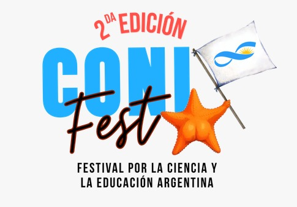

Vos jugás a la izquierda (mouse, pantalla táctil, W/S o ↑/↓), y la paleta derecha la maneja PatricIA, una pequeña red neuronal que arranca al azar y aprende, de su propia experiencia, adónde va a llegar la pelota. Espacio pausa el juego.